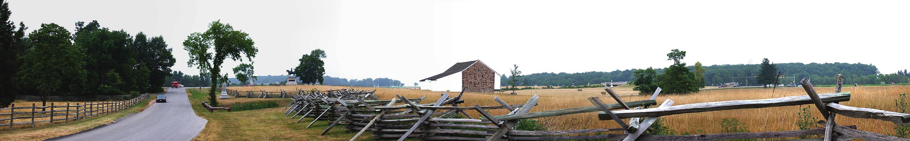

Day One with Prof. Gary Gallagher
/ NK010726075217_281
7/26/2001

Meredith Ave. (looking north)
Buford Statue
Reynolds statue (Oak Hill in the distance)
McPherson Barn
Bridge over Railroad Cut
Looking north from the statue of
John Burns along Meredith Ave. McPherson barn is in the center
of the panorama. Oak Hill is in the distance to the left of the
barn.